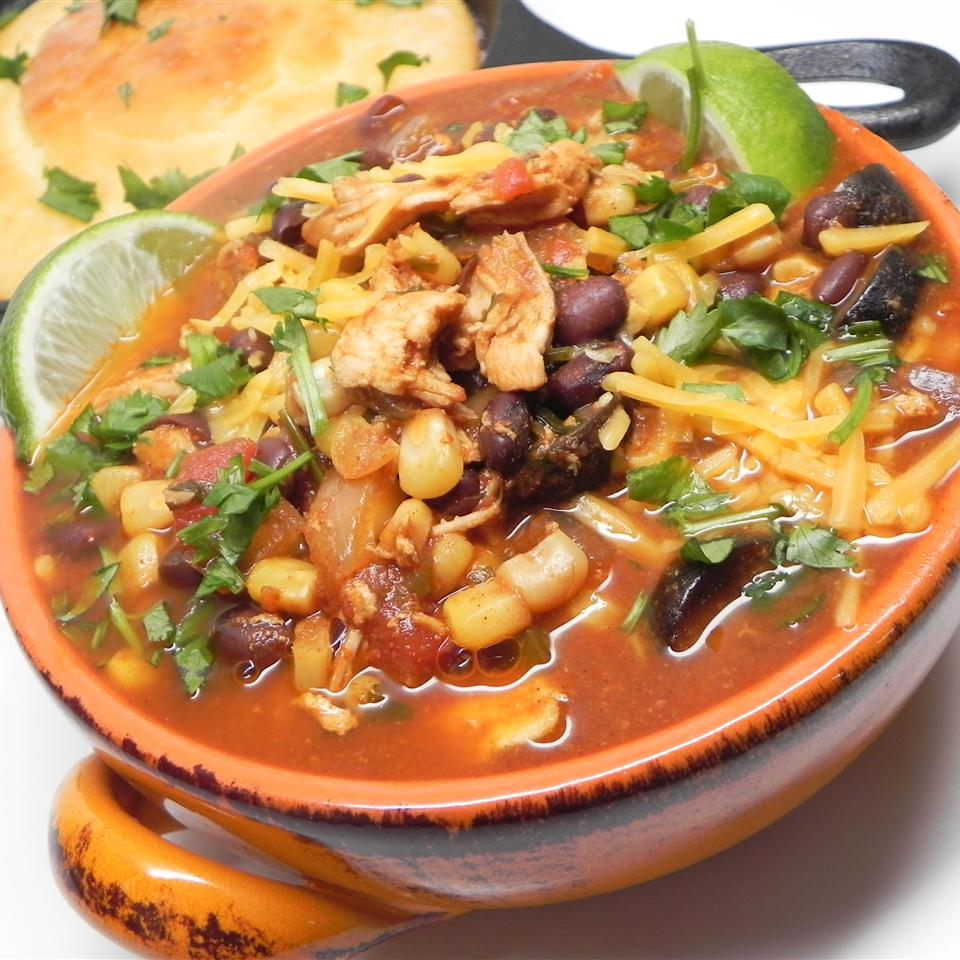

Chicken Enchilada Soup

Description
Not quite a tortilla soup, not quite a taco soup, this comes together fast and gets better overnight. Stores like a dream and has fabulous flavor. Serve with sour cream and cheese on top, with either tortilla chips or cornbread on the side. Or if you're feeling fancy, you could make some paninis with pepper Jack cheese, roasted red peppers, avocados, tomatoes and mushrooms. Very tasty!
Ingredients
- 4 cups chicken broth
- 2 (15 ounce) cans black beans, drained
- 2 (10 ounce) cans diced tomatoes with green chile peppers
- 1 (12 fluid ounce) can pale ale
- 1 (10 ounce) package frozen corn
- 1 (8 ounce) package red enchilada sauce (such as Frontera®)
- 1 onion, diced
- 1 (1.25 ounce) package taco seasoning
- 1 jalapeno pepper, seeded and diced
- 1 pound frozen chicken breasts
- 1 bunch cilantro, chopped
Steps
- Mix chicken broth, black beans, diced tomatoes, pale ale, corn, red enchilada sauce, onion, taco seasoning, and jalapeno pepper together in a slow cooker. Add whole chicken breasts.
- Cook on Low until an instant-read thermometer inserted into the center of the chicken reads at least 165 degrees F (74 degrees C), 5 to 6 hours. Remove chicken and shred using 2 forks; stir back into the slow cooker. Continue cooking, 1 to 2 hours more.
- Stir cilantro into the slow cooker. Cook on Low until flavors combine, about 15 minutes.
Back to Home